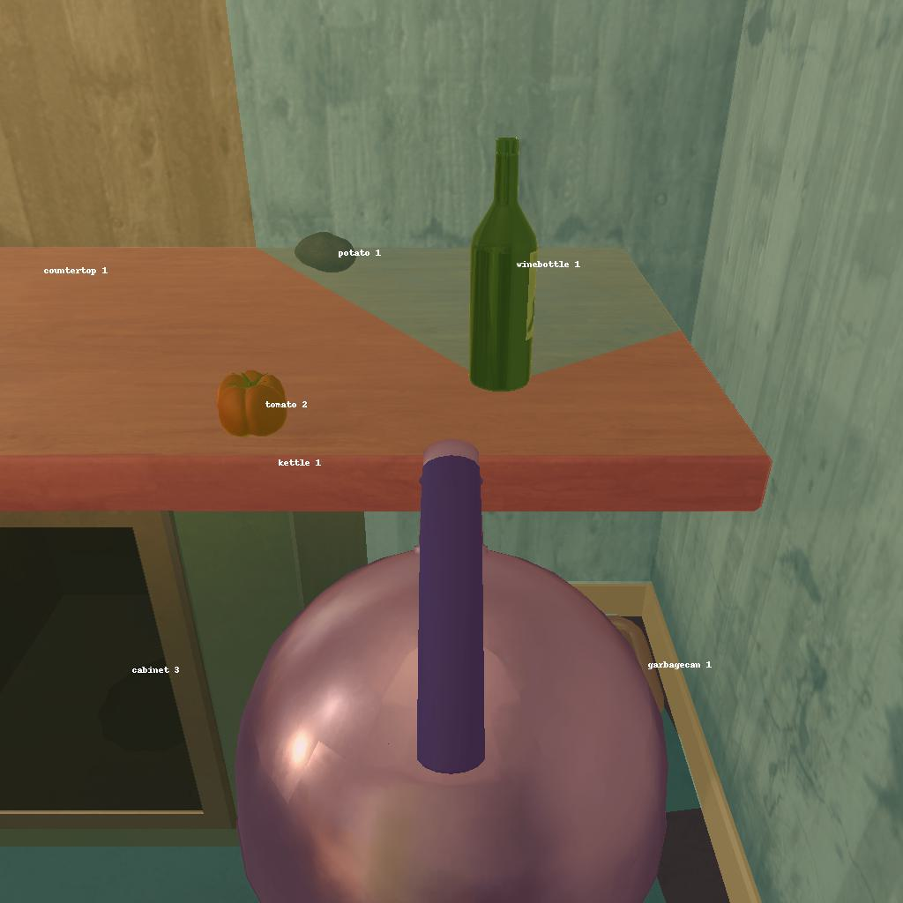

---------------------------------------------------------task: 26---------------------------------------------------------
--------------------------------------------------------------------------------------------------------------------------------------------------------------------
--------------------------------------------------------------------------------------------------------------------------------------------------------------------
Step:--------------------------------------------------------------------------13-------------------------------------------------------------------------------
----------------------------------------
VLM Prompt:
Image1:
Image2:
Image3:
**Instruction**
1. Analyze the provided image to identify all visible household objects, focusing on those relevant to the task description "find two kettle and put them in cabinet."
2. Use the analysis of the image and the task hint "The agent must find an object of the desired type, pick it up, find the correct location to place it, put it down there, then look for another object of the desired type, pick it up, return to previous location, and put it down there with the other object." to answer the question: what is the most reasonable action in the choices for the task description "find two kettle and put them in cabinet"?
4. Decide and write the answer using the template: The answer is: (i): , where i is the real number. If there is no desired object in the image, search every place based on **Initial Observation** to find the object. And if no one is exactly correct, choose a similar answer.
**Initial Observation**
You are in the middle of a room. Looking quickly around you, you can see countertop (1), coffeemachine (1), cabinet (1-4), drawer (1-8), sink (1), sinkbasin (1), garbagecan (1), fridge (1), microwave (1), dresser (1), sidetable (1)
**Answer Choices**
(1): go to countertop 1
(2): go to coffeemachine 1
(3): go to cabinet 1
(4): go to cabinet 2
(5): go to drawer 1
(6): go to sink 1
(7): go to sinkbasin 1
(8): go to garbagecan 1
(9): go to cabinet 4
(10): go to drawer 2
(11): go to fridge 1
(12): go to microwave 1
(13): go to dresser 1
(14): go to sidetable 1
(15): go to drawer 3
(16): go to drawer 4
(17): go to drawer 5
(18): go to drawer 6
(19): go to drawer 7
(20): go to drawer 8
(21): open cabinet 3
(22): examine cabinet 3
**Answer**
Let's think step by step by following the instructions.
----------------------------------------
----------------------------------------
Original Response:
First, we have to identify all the visible household objects in the provided images. In all three images, we can see a kettle labeled as "kettle 1" on the countertop. Since the task is to find two kettles, we need to search for another one. The analysis of the images shows that only one kettle is visible, so we must search other places for the second kettle.
Based on the Initial Observation, we know there are multiple cabinets and drawers that we have not yet searched. Since "cabinet 3" is labeled in the image, let's start there. We can either open or examine cabinet 3 to search for the second kettle.
Between the options of opening and examining, opening the cabinet would be the most direct action to find the second kettle. Therefore, the most reasonable action from the choices provided for the task description "find two kettles and put them in cabinet" would be to open cabinet 3.
The answer is: (21): open cabinet 3.
----------------------------------------
----------------------------------------
>>> Refine Original VLM Response and Get Pure Action: open cabinet 3
----------------------------------------
-----------------------------------------------------------------
Running time: 12.475308179855347 seconds
Total Money: 17.00682
-----------------------------------------------------------------
-----------------------------------------------------------------
Text Observation:You open the cabinet 3. The cabinet 3 is open. In it, you see a winebottle 1, a tomato 2, and a potato 1.
-----------------------------------------------------------------
UNSUCCEED